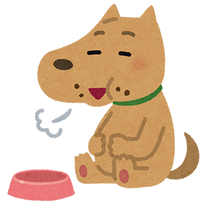

Individual-Name : Suzuki
Age : 28 Year's old
Birthplace : Shizuoka prefecture
Blood-Type : O
Constellation : Gemini
※ 「Q」の項目をクリックすると開閉します ※
※ 左の項目をクリックすると表示されます ※
Glass Heart
Please do not feed
Nucleus of Life
Jungle hear
Impotence
Not Comedian
Temporary Death
Poor Mind